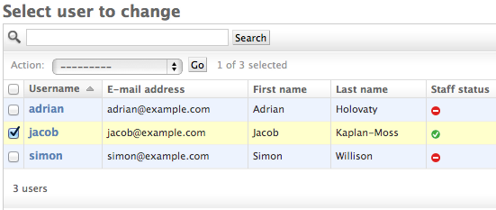
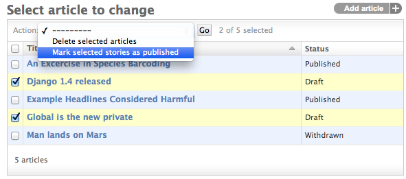
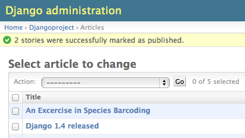

原文
简而言之，Django管理后台的基本流程是，“选择一个对象并改变它”。在大多数情况下，这是非常适合的。然而当你一次性要对多个对象做相同的改变，这个流程是非常的单调乏味的。
在这些例子中，Django管理后台可以让你实现和注册“操作” —— 仅仅只是一个以已选中对象集合为参数的回调函数。
在Django自带的管理页面中都能看到这样的例子。Django在所有的模型中自带了一个“删除所选对象”操作。例如，下面是 django.contrib.auth app 在Django's创建的用户模型:
警告
“删除所选对象”的操作由于性能因素使用了QuerySet.delete()，这里有个附加说明：它不会调用你模型的delete()方法。
如果你想覆写这一行为，编写自定义操作，以你的方式实现删除就可以了 -- 例如，对每个已选择的元素调用Model.delete()。
关于整体删除的更多信息，参见对象删除的文档。
继续阅读，来弄清楚如何向列表添加你自己的操作。
通过示例来解释操作最为简单，让我们开始吧。
操作的一个最为普遍的用例是模型的整体更新。考虑带有Article模型的简单新闻应用：
from django.db import models
STATUS_CHOICES = (
('d', 'Draft'),
('p', 'Published'),
('w', 'Withdrawn'),
)
class Article(models.Model):
title = models.CharField(max_length=100)
body = models.TextField()
status = models.CharField(max_length=1, choices=STATUS_CHOICES)
def __str__(self): # __unicode__ on Python 2
return self.title
我们可能在模型上执行的一个普遍任务是，将文章状态从“草稿”更新为“已发布”。我们在后台一次处理一篇文章非常轻松，但是如果我们想要批量发布一些文章，会非常麻烦。所以让我们编写一个操作，可以让我们将一篇文章的状态修改为“已发布”。
首先，我们需要定义一个函数，当后台操作被点击触发的时候调用。操作函数，跟普通的函数一样，需要接收三个参数：
我们用于发布这些文章的函数并不需要ModelAdmin或者请求对象，但是我们会用到查询集：
def make_published(modeladmin, request, queryset):
queryset.update(status='p')
注意
为了性能最优，我们使用查询集的update 方法。其它类型的操作可能需要分别处理每个对象；这种情况下我们需要对查询集进行遍历：
for obj in queryset:
do_something_with(obj)
编写操作的全部内容实际上就这么多了。但是，我们要进行一个可选但是有用的步骤，在后台给操作起一个“非常棒”的标题。通常，操作以“Make published”的方式出现在操作列表中 -- 所有空格被下划线替换后的函数名称。这样就很好了，但是我们可以提供一个更好、更人性化的名称，通过向make_published函数添加short_description 属性：
def make_published(modeladmin, request, queryset):
queryset.update(status='p')
make_published.short_description = "Mark selected stories as published"
注意
这看起来可能会有点熟悉；admin的list_display选项使用同样的技巧，为这里注册的回掉函数来提供人类可读的描述。
接下来，我们需要把操作告诉ModelAdmin。它和其他配置项的工作方式相同。所以，带有操作及其注册的完整的admin.py看起来像这样：
from django.contrib import admin
from myapp.models import Article
def make_published(modeladmin, request, queryset):
queryset.update(status='p')
make_published.short_description = "Mark selected stories as published"
class ArticleAdmin(admin.ModelAdmin):
list_display = ['title', 'status']
ordering = ['title']
actions = [make_published]
admin.site.register(Article, ArticleAdmin)
这段代码会向我们提供admin的更改列表，看起来像这样：
这就是全部内容了。如果你想编写自己的操作，你现在应该知道怎么开始了。这篇文档的剩余部分会介绍更多高级技巧。
如果你预见到，运行你的操作时可能出现一些错误，你应该以优雅的方式向用户通知这些错误。也就是说，异常处理和使用django.contrib.admin.ModelAdmin.message_user()可以在响应中展示用户友好的问题描述。
对于进一步的选择，你可以使用一些额外的选项。
上面的例子展示了定义为一个简单函数的make_published操作。这真是极好的，但是以视图的代码设计角度来看，它并不完美：由于操作与Article紧密耦合，不如将操作直接绑定到ArticleAdmin对象上更有意义。
这样做十分简单：
class ArticleAdmin(admin.ModelAdmin):
...
actions = ['make_published']
def make_published(self, request, queryset):
queryset.update(status='p')
make_published.short_description = "Mark selected stories as published"
首先注意，我们将make_published放到一个方法中，并重命名 modeladmin 为self，其次，我们现在将'make_published'字符串放进了actions，而不是一个直接的函数引用。这样会让 ModelAdmin将这个操作视为方法。
将操作定义为方法，可以使操作以更加直接、符合语言习惯的方式来访问ModelAdmin，调用任何admin提供的方法。
例如，我们可以使用self来向用户发送消息，告诉她操作成功了：
class ArticleAdmin(admin.ModelAdmin):
...
def make_published(self, request, queryset):
rows_updated = queryset.update(status='p')
if rows_updated == 1:
message_bit = "1 story was"
else:
message_bit = "%s stories were" % rows_updated
self.message_user(request, "%s successfully marked as published." % message_bit)
这会使动作与后台在成功执行动作后做的事情相匹配：
通常，在执行操作之后，用户会简单地通过重定向返回到之前的修改列表页面中。然而，一些操作，尤其是更加复杂的操作，需要返回一个中间页面。例如，内建的删除操作，在删除选中对象之前需要向用户询问来确认。
要提供中间页面，只要从你的操作返回HttpResponse（或其子类）就可以了。例如，你可能编写了一个简单的导出函数，它使用了Django的序列化函数来将一些选中的对象转换为JSON：
from django.http import HttpResponse
from django.core import serializers
def export_as_json(modeladmin, request, queryset):
response = HttpResponse(content_type="application/json")
serializers.serialize("json", queryset, stream=response)
return response
通常，上面的代码的实现方式并不是很好。大多数情况下，最佳实践是返回 HttpResponseRedirect，并且使用户重定向到你编写的视图中，向GET查询字符串传递选中对象的列表。这需要你在中间界面上提供复杂的交互逻辑。例如，如果你打算提供一个更加复杂的导出函数，你会希望让用户选择一种格式，以及可能在导出中包含一个含有字段的列表。最佳方式是编写一个小型的操作，简单重定向到你的自定义导出视图中：
from django.contrib import admin
from django.contrib.contenttypes.models import ContentType
from django.http import HttpResponseRedirect
def export_selected_objects(modeladmin, request, queryset):
selected = request.POST.getlist(admin.ACTION_CHECKBOX_NAME)
ct = ContentType.objects.get_for_model(queryset.model)
return HttpResponseRedirect("/export/?ct=%s&ids=%s" % (ct.pk, ",".join(selected)))
就像你看到的那样，这个操作是最简单的部分；所有复杂的逻辑都在你的导出视图里面。这需要处理任何类型的对象，所以需要处理ContentType。
这个视图的编写作为一个练习留给读者。
如果一些操作对管理站点的任何对象都可用的话，是非常不错的 -- 上面所定义的导出操作是个不错的备选方案。你可以使用AdminSite.add_action()让一个操作在全局都可以使用。例如：
from django.contrib import admin
admin.site.add_action(export_selected_objects)
这样，export_selected_objects 操作可以在全局使用，名称为“export_selected_objects”。你也可以显式指定操作的名称 – 如果你想以编程的方式移除这个操作 – 通过向AdminSite.add_action()传递第二个参数：
admin.site.add_action(export_selected_objects, 'export_selected')
有时你需要禁用特定的操作 -- 尤其是注册的站点级操作 -- 对于特定的对象。你可以使用一些方法来禁用操作：
如果你需要禁用站点级操作 ，你可以调用 AdminSite.disable_action()。
例如，你可以使用这个方法来移除内建的“删除选中的对象”操作：
admin.site.disable_action('delete_selected')
一旦你执行了上面的代码，这个操作不再对整个站点中可用。
然而，如果你需要为特定的模型重新启动在全局禁用的对象，把它显式放在ModelAdmin.actions 列表中就可以了：
# Globally disable delete selected
admin.site.disable_action('delete_selected')
# This ModelAdmin will not have delete_selected available
class SomeModelAdmin(admin.ModelAdmin):
actions = ['some_other_action']
...
# This one will
class AnotherModelAdmin(admin.ModelAdmin):
actions = ['delete_selected', 'a_third_action']
...
如果你想批量移除所提供 ModelAdmin上的所有操作，可以把ModelAdmin.actions设置为None：
class MyModelAdmin(admin.ModelAdmin):
actions = None
这样会告诉ModelAdmin，不要展示或者允许任何操作，包括站点级操作。
最后，你可以通过覆写ModelAdmin.get_actions()，对每个请求（每个用户）按需开启或禁用操作。
这个函数返回包含允许操作的字典。字典的键是操作的名称，值是 (function, name, short_description)元组。
多数情况下，你会按需使用这一方法，来从超类中的列表移除操作。例如，如果我只希望名称以'J'开头的用户可以批量删除对象，我可以执行下面的代码：
class MyModelAdmin(admin.ModelAdmin):
...
def get_actions(self, request):
actions = super(MyModelAdmin, self).get_actions(request)
if request.user.username[0].upper() != 'J':
if 'delete_selected' in actions:
del actions['delete_selected']
return actions
May 13, 2015